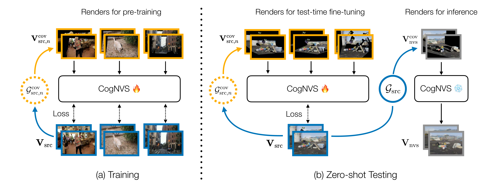

How does it work?
During training (left), given a 2D source video (in blue) of a dynamic scene, we first reconstruct the scene using off-the-shelf monocular reconstruction algorithms like MegaSAM to obtain the 3D scene geometry, \( \mathcal{G}_{\rm src} \), and camera odometry, \( \mathbf{c}_{\rm src} \). We then sample a set of arbitrary camera trajectories \( \{\mathbf{c}_1, \cdots, \mathbf{c}_N\} \) to simulate plausible occluded geometries, \( \{\mathcal{G}^{\rm cov}_{{\rm src},1}, \cdots, \mathcal{G}^{\rm cov}_{{\rm src},N}\} \), which when rendered from original camera trajectory \( \mathbf{c}_{\rm src} \) produces a mask of source pixels that are co-visible in the sampled trajectory (in orange). The source video and its masked variant produce a self-supervised training pair for learning CogNVS, our video inpainting diffusion model (visualized in the next figure). At inference (right), we finetune CogNVS on the given input sequence by similarly constructing self-supervised training pairs. The final novel-view is then generated using the finetuned CogNVS in a feed-forward manner.
